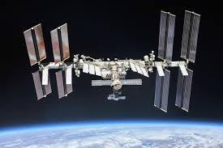

Mars Exploration

Mars Exploration Program (MEP) is a long-term effort to explore the planet Mars, funded and led by NASA.
Formed in 1993, MEP has made use of orbital spacecraft, landers, and Mars rovers to explore the possibilities of life on Mars, as well as the planet's climate and natural resources.
International Space Station

The International Space Station (ISS) is a large space station that was assembled and is maintained in low Earth orbit by a collaboration of five space agencies and their contractors: NASA (United States), Roscosmos (Russia), ESA (Europe), JAXA (Japan), and CSA (Canada). The ISS is the largest space station ever built.